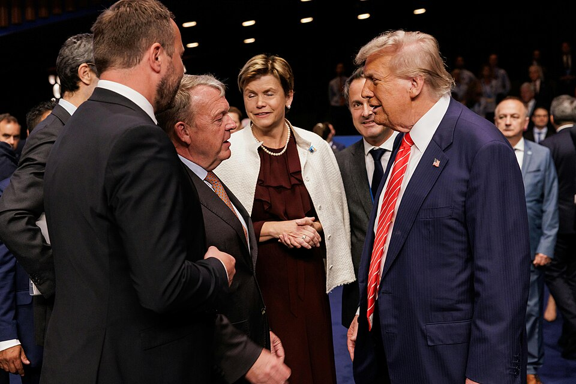

NATO’s New War Readiness Comes With a Trillion-Dollar Price Tag
From a 2% defence benchmark to a 5% commitment, NATO nations are rapidly expanding military spending and weapons production as the alliance prepares for what it calls its most dangerous security environment in a generation.

Source: Wikimedia Commons
For decades, NATO’s (North Atlantic Treaty Organisation) defence spending benchmark was 2% of GDP. That number has now been replaced by a far more ambitious target. At its 2025 summit in The Hague, the alliance’s 32 members committed to spending 5% of their GDP annually on defence and security by 2035, including at least 3.5% on core military requirements and 1.5% on wider defence and security-related spending. NATO says the move is a response to a deteriorating security environment and the need to strengthen deterrence.
The shift is already visible in national budgets. European NATO members and Canada increased their combined core defence spending by nearly 20% in real terms in 2025, adding more than $139 billion compared with the previous year. By July 2026, NATO said total defence and security spending by European Allies and Canada was already around 4% of GDP, only a year into the ten-year push towards the 5% target.
The increase is particularly pronounced among NATO’s eastern members. Countries closest to Russia are devoting some of the largest shares of their economies to defence, as governments strengthen their armed forces and prepare for a security environment shaped by Russia’s war in Ukraine. Poland, in particular, has moved well beyond the alliance’s old 2% benchmark, while the Baltic states have also sharply increased defence allocations.
The United States shifts from the position of the dominant military spender inside the alliance, but Europe’s role is changing. NATO’s new spending commitment is designed to shift more of the burden towards European members and Canada, while simultaneously expanding the alliance’s ability to produce weapons and military equipment. At its 2026 Ankara summit, NATO said the focus had moved from setting spending targets to actually delivering new capabilities and expanding defence production.
Five years later, almost nothing has changed
And that spending is increasingly translating into orders for the defence industry. NATO has identified air and missile defence, long-range weapons, logistics, ammunition, drones, military mobility and other capabilities as areas where allies need greater capacity. NATO Secretary General Mark Rutte has described the alliance’s current security environment as the “most dangerous and complex security environment in a generation”, citing Russia’s war against Ukraine, terrorism, Iran and wider geopolitical competition.
The global arms industry is already reflecting that demand. According to the Stockholm International Peace Research Institute, the world’s 100 largest arms-producing and military services companies generated $679 billion in arms revenues in 2024, a 5.9% increase in real terms from 2023 and the highest figure recorded by SIPRI. Seventy-seven of the 100 companies increased their arms revenues, including 42 that recorded double-digit growth.
The graphic has three scatter plots showing where Deepti Sharma stands compared to other bowlers in Tests, ODIs and T20Is. All players are shown using yellow dots while Deepti Sharma is shown using a red dot.
The growth is particularly concentrated in the United States and Europe. The 39 US-based companies in the SIPRI Top 100 generated $334 billion in arms revenues in 2024, while the 26 European companies generated $151 billion, a 13% increase over the previous year. SIPRI attributes the wider rise in arms revenues to ongoing wars, geopolitical tensions and growing military budgets.
Europe’s demand for weapons is also changing the global arms trade. SIPRI reported in March 2026 that the volume of major arms transferred between states rose 9.2% between 2016–20 and 2021–25, while European arms imports more than tripled, making Europe the world’s largest recipient region during that period.
The numbers point to a broader shift: NATO countries are not simply spending more on maintaining existing militaries. They are committing money to new weapons, ammunition stocks, air defence, drones, long-range strike capabilities, infrastructure and expanded industrial capacity. NATO’s own defence plans call for a major expansion in production alongside increased military spending.
For governments, the stated objective is deterrence: making their militaries capable enough to prevent an attack. But the scale of the financial commitment is changing the economics of defence itself. As governments expand military budgets, arms manufacturers are expanding production and recording higher revenues, creating a defence economy increasingly shaped by the expectation of sustained demand.
The question, therefore, is no longer simply how much NATO countries spend on defence. It is how far governments are preparing for a world in which major military conflict is considered a serious enough possibility to justify a permanent expansion of military capability. NATO has set its spending horizon at 2035. The arms industry is already responding.
The gendered burden of unpaid work
As per the 2024 data issued by the Ministry of Statistics and Program Implementation (MoSPI), the difference between unpaid labour done by men and women is stark.
Women account for 21.3% of the unpaid labour, while men account for 3.9% only.
Thus, the share of unpaid work among women is more than five times that of men.
These figures highlight how it is more likely that domestic and caregiving responsibilities are carried out by women. Furthermore, for many women, they perform such unpaid work alongside their paid work, creating double the burden.